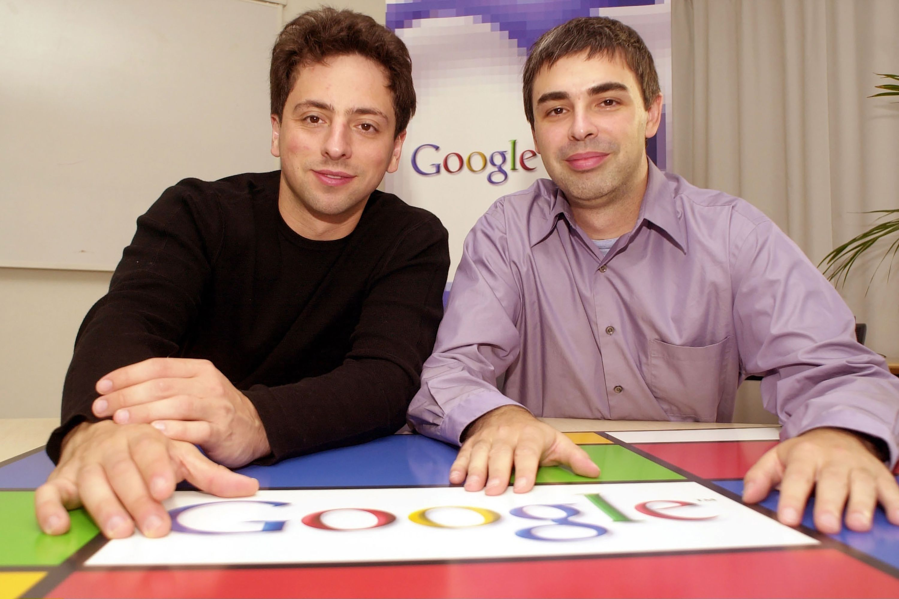
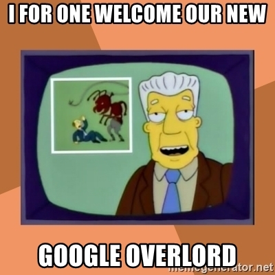

Vår herre Google!
Det som var "Google" 1996, innan det blev ett världens mest prominenta företag, Google LLC:
Även om Google idag är ett av världens mest prominenta sökmotorer så hade det faktiskt sin början som hjärnbarnet av en student på Stanford University 1995 vid namn Larry Page (passande namn må jag säga) och hans fiendekompis, studentkamraten Sergey Brin.
Dessa två män, (även om de inte alltid kom överens om hur saker skulle ske) hade en vision, en vision att skapa en sökmotor som använder länkar för kunna bestämma vikten av enskilda sidor på world wide webb. Detta så att sökmotorn fortsättningsvis kan rekommendera de mest relevanta webbsidorna för användaren, samt leverera en grupp förslag på webbsidor som svarar på informationen av det användaren sökte efter.
1996, ett år efter att de börjat på projektet kunde de rulla ut första versionen Backrub, det som senare blev Google.
Att välja bättre namn på sina ideer:

Även om sökmotorn i sitt första stadie hade ett namn som påminner om en erotisk hemsida, så såg den lovande ut. Men Larry och Sergey måste ha förstått ganska snabbt att "Backrub" var en dumt och korkat namn på en sökmotor, för kort därefter döpte de om den till vad vi alla känner till idag, Google.
Från det att Google var en simpel sökmotor, till det att Google LLC föddes:
Även fast många användare var positiva till sökmotorn, b.la universit och i cirklar inom Silicon Valleys så tog det faktiskt ett par år innan en investerare bestämmde sig för att investera i Google, och denna investerare var ingen annan än Andy Bechtolsheim, co-creator av Sun.
Så augusti 1998 skrev Andy Bechtolsheim, vice ordförande för Silicon Valley en check till Larry Page och Sergey Brin på $100000 som gjorde att dessa två män fick medel att kunna expandera till ett företag, nu kallat Google LLC, vilket i sin tur gjorde Larry och Sergey kunde anställa sina första medarbetare.
Och som åren fortsatte fick företaget bara ett starkare och starkare fäste i vår värld, vilket resulterade i att de kunde anställa fler och fler medarbetare, samt öppna nya projekt som redan har och kommer förändra världen i framtiden.
Mina egna slutord och reflektioner:
Även om jag personligen är kritisk gentemot Google LLC så måste jag fortfarande erkänna att jag kan inget annat än att beundra vad dessa två män har skapat. Att kunna föda ett företag som bara växer och växer med åren, både i värde, GMP och framställning av teknik kräver mod och kunskap, men framförallt, att man vet hur man ska få en simple ide att växa till en stormakt.